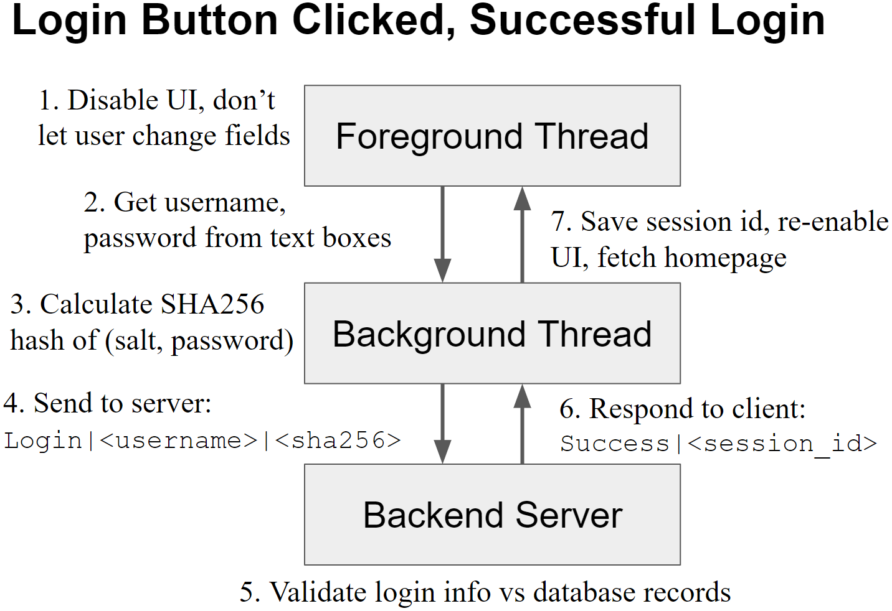

This book is for informational purposes only. Except when an external source is cited, everything in the book is the author’s opinion. The author makes no guarantee about the correctness or accuracy of any content in this book. Furthermore, you may disagree with and/or find certain content offensive.
Read at your own risk. Do not continue reading if you do not accept full responsibility for all actions you take as a result of reading this book. The author is not liable for any damages including, but not limited to, academic failures, career path mistakes, financial loss, feeling upset, and physical/mental injury.
If you’ve been proactive with networking and applying for internships, you’ll likely have an internship experience your sophomore summer. Take your internship seriously: do your work well, but also have fun and evaluate if the company is somewhere you’d like to work full-time. In this chapter, we’ll cover the primary facets of an internship: the technical parts, the behavioral parts, and the external environment.
Most internships involve an experienced full-time employee working with an intern. The full-time engineer helps the intern complete a well-defined project over the course of the summer.
Internships are an opportunity for employers to scout out potential college hires. Does the intern do their work well? Does the intern work well with others? Does the intern communicate well? Does the intern have a good work ethic?
Internships are also your opportunity to scout out potential full-time employers. Do you like your job responsibilities? Do you like the company culture? Do you like the people around you? Do you like the city or town where your employer is located?
Let’s start with what your employer wants. Employers want strong software engineers: that means interns who complete their assigned internship project. For small, well-defined projects like those in an internship, consider approaching your project with a simplified “waterfall” method.
This simplified waterfall method consists of three stages: requirements, design, and coding. You perform the three stages in that order, and try to do them well enough to avoid going back — just as water never goes back up a waterfall. Let’s discuss the three stages next.
The requirements stage is about understanding the problem correctly. Requirements are the spec for your software and they state what your final program will do. Never start writing code if you don’t know what you need to create — you’ll end up creating the wrong thing and throwing all your work away. Flush out your requirements as thoroughly as you can.
In the first few days of your internship, your mentor will help you understand the requirements for your project. Pay close attention to what they say and always ask questions if something is unclear. See if you can re-explain everything in your own words. An easy way to document your requirements while re-explaining is to write user stories.
A user story describes a sequence of events where a user interacts with your software. For example:
Write a user story for every scenario you can think of and save them in a document. Ask your mentor to review and revise as necessary. Repeat until you can’t think of any more new requirements.
Once you generate your requirements and understand what you need to produce, the design stage helps you understand what code you are going to write. The design illustrates all the code changes you plan to make. Here’s a simple example:

Sometimes, your mentor may have already completed the design for you, in which case you only have to review the design, confirm you understand it, and then go on to coding. Other times, you have to create the design document yourself. If you’re adding to an existing codebase, start by understanding as much of the existing code as you can. Then describe all the new code you are going to write, and all its interactions with existing code. If starting an entirely new codebase, list out all the components you plan to create and state how they interact with each other.
The design stage is where you often see lots of boxes and arrows. For complex designs, it helps to review all your requirements and step through them in the diagram. For example, in the “User clicks the login button” step of the requirements, do you have a box or arrow to account for all the background logic that goes on to send the login request to a server?
The benefit of stepping through each requirement in your design document is if you catch something missing or incorrect at this stage, it’s easier to modify a diagram than it is to rewrite a hundred lines of incorrect code. Once you think your design captures all the requirements and your mentor has reviewed it, you can move on to the code.
Coding in industry follows a straightforward process:
Here are a few tips for successful coding.
Comment your code. Don’t expect everyone to just read your code and understand all of it.
Test your code. If you don’t write unit or system tests for your code, nobody will have confidence that it works. If you generated your requirements properly, you should be able to write a test case for each scenario and check them off one-by-one.
Keep code reviews small and frequent. Submit small, incremental portions so that your mentor can catch any major mistakes early on. You don’t want to write the entire project only to be asked to rewrite everything in code review due to a major problem in your code.
Pay attention to repeated mistakes in code reviews. If someone points out a mistake one time, stop making it in the future. When you keep making the same mistakes over and over again, your mentor will conclude you lack attention to detail.
Requirements, design, and coding are the three primary stages you’ll encounter in an internship. There are other stages in the waterfall method and other methodologies beyond the waterfall method, but they are out of scope here.
Before you leave your internship, write documentation so that your mentor can continue maintaining your project. Describe the high level architecture, provide a user guide, or create any other written content that will let someone else use your project easily. You may even come back full-time and be asked to maintain your intern project, in which case you’ll definitely want documents to refresh your memory a year later.
You may also give a presentation to your team and upper management after your project concludes. The key to a successful presentation is understanding your audience. The majority of the audience will lack insight into your nitty-gritty technical details. Avoid giant blocks of text and focus on visuals and dumbing things down. You can keep backup slides with technical details at the very end in case someone does grill you, but only go that route by request. An end-of-internship presentation is more an information session than a thesis defense.
From the employer’s perspective, roughly 80% of the internship is the technical part; the remaining 20% is behavioral and you need it to succeed. You can be the best engineer in the world, but you won’t get hired if you don’t communicate, or you make everyone around you angry, or you always appear to be slacking. In this section, we’ll discuss several behavioral aspects of the internship: communication, personality, and work ethic.
Communication involves keeping your mentor up to speed with your progress. Aim for consistent oral and written communication. Chat with your mentor daily or whenever you have notable progress to report. It also helps to keep a public work log so that anyone can see what you’ve been working on. Keep all lines of communication open so that your mentor can identify problems with your work early on and give you a chance to improve before the internship is over. If you don’t know about all the things you’re doing wrong until the end of the internship, then you’ve failed and won’t get a return offer.
Personality involves how others perceive you. It’d be great if you brought a smile to everyone’s face every time you spoke, but that’s not a requirement. The only dealbreaker is being an asshole in the office. Avoid being confrontational. If someone makes a mistake, don’t make them feel bad about it. If you disagree with your mentor, phrase your resistance in the form of questions. Most of the time, you should just do as you’re told. As an intern, you don’t have any standing in the company, so be nice, even if someone else triggers you. Avoid confrontation and you won’t raise any red flags.
People judge work ethic by how hard you appear to work. Be in the office before your mentor arrives and go home after your mentor leaves to give off an impression of hard work. If you’re idle, go self-study something to appear like you’re still working hard. If you’re unfamiliar with basic office etiquette, you can find many online resources explaining how to dress, send emails, answer the phone, present yourself during meetings, and everything else. Most importantly, when you ask for help, always show that you’ve tried solving the problem yourself. Describe what you’ve tried and why it didn’t work. Then state how the person helping you can assist.
Doing well in the internship and getting a return offer is straightforward: complete all the technical parts and don’t show any red flags on the behavioral parts. For the most part, tech is still a meritocracy and solid work is rewarded.
If you do get a return offer, you’ll want to consider whether or not you want to return and work at the company for another internship or a full-time role. In the rest of this chapter, we’ll focus on what the company offers you: company culture and life outside work.
Internships are a two-way street: your company judges if they want to hire you full-time, and you judge if you want to work for your company full-time. Always gauge a company’s culture when deciding whether or not to return full-time. There are three main aspects: the people around you, how much the company can grow, and how much you can grow.
If you join a company full-time, you’ll interact with coworkers and bosses frequently; make sure they’re people you want to work with. Take advantage of social opportunities to meet people in the company, whether it be an informal team outing, or a meet-and-greet with your CEO.
Come prepared to start some smalltalk. Rehearse some icebreaker questions, your answer to “what do you do?” and brush up on current events. All of these generate smalltalk. You can sense how welcoming the people around you are from some smalltalk. Do they give you a cold shoulder and sound disinterested? Or do they approach you without hesitation and have an engaging conversation with you?
Once you establish rapport via smalltalk, move into more-meaningful questions to probe for company growth and your future career growth. Here are some examples of probing questions you may want to ask on company growth and career growth.
Anything you’d change about your company? This gets at any negatives in the company. An angry tirade indicates bad culture and either the company is horrible, or the employees get angry too easily. Both will stunt a company’s growth. Every company does have problems though, and you should expect a fluffy, politically-correct response.
What’s the best part about working here? If employees bubble with compliments about their job, then that’s a sign of a great place where employees work together well.
How long have you been at the firm for? Getting a sense of the median employee tenure helps illustrate turnover. If everyone is new, then that suggests people aren’t sticking around. If everyone is senior, then that suggests the firm is having difficulty hiring. Both extremes indicate some underlying problem that will hurt company growth in the long run. The most successful firms have noticeable numbers of new and long-time employees.
Why did you join the company? See why other people have been joining the company. If you get responses similar to “well I need a job,” then you might not be working with motivated individuals who can help you grow. If you hear people talking about how their skillset was the perfect fit for a problem at the company, or how they wanted to challenge themselves in their role, then you’re in business.
What did you do before coming here? A lot of people will give fluffy politically-correct responses for “Why did you join the company” because their sole motivator was money. A better way to glean career growth information is to ask them what they did before joining the company. Do you see your future self in some of the full-time employees around you? Were a lot of people joining out of college? If yes, then that’s a good sign. If not, then the company may not be a great fit for new college graduates.
Tell me about a project here that you’re proud of. Listen to people talk about their work. Are they just clicking some buttons and going home each day? Or do they have opportunities to develop meaningful skills? Do they get increasing responsibilities as they grow more senior in the company? Take into account how many years they’ve worked and how big of a project they’ve worked on. It’ll be a good indicator of where you can be in the future as well.
No company can be perfect, but it’s important to learn as much as you can up front to make an educated decision should you end up receiving a return offer to work full-time.
In addition to confirming that you enjoy working in the company, confirm that you’ll enjoy life outside of work as well. Don’t forget to have fun and explore the surrounding neighborhood(s) during your internship. Here are some important questions to answer:
Can you tolerate the weather? Go outside a lot during your internship and research the weather for non-internship months. Cold, hot, dry, humid, sunny, cloudy, hurricanes, tornadoes, and the list goes on. If you can’t deal with the weather, then find a full-time job elsewhere.
Do you trust the local government? Watch the local news on TV or read small regional newspapers. How tough are your politicians on crime? How about taxation? Is public transit sufficient? How about drugs? Zoning laws and their impact on housing prices? Any discrimination against race, nationality, gender, or sexual orientation? Make sure you can at least tolerate all the policies your local politicians make.
How wealthy is the area? Wealthy areas are usually better off than poor areas. Poor areas suffer from disinvestment and violence, which can add stress to your life. Explore the area around you and see if it gives off a wealthy, middle-of-the-road, or poor vibe. If there are safety issues, avoid that area for your full-time job.
Can you have fun? Make sure there are activities in the vicinity that you enjoy. If you can’t find ways to have fun during your free time, you’ll get bored and depressed and that can spill over and hamper your job performance.
No internship is complete without having fun and having fun is best done with friends. Reach out to the other interns at your company or acquaintances from college who are in the area. The first week, consider hosting a gathering at your apartment and supply some snacks or alcohol if you’re of age. Chances are, other interns will be in the same boat as you: looking for friends to hang out with. You can talk about activities to do over the summer and make plans for future weekends.
If you’re not sure about what to do, consider these activities:
If you live in or close to a city, most of these options should be available. And if someone can drive, or the public transit is excellent, you should be able to get to all of them. If you’re stingy, be open to spending more. You’ll earn tons more once you start your full-time job and it’s not worth losing out on an important part of your internship experience just to save a few dollars.
First and foremost, your internship is an opportunity to impress an employer with your work ability. Strive to do the best job you can at work because getting a return offer is always better than not getting one. At the same time, explore company culture and life outside work as well. You want to understand all parts of the company, the good and the bad, when you’re making a decision down the line about whether or not to join full-time.